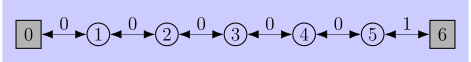

# === update rules for mc and td ===
def mc_every_visit_update(episode: list[int], V: list[float], α):
for s in episode:
V[s] += α * (V[episode[-1]] - V[s])
def one_step_td_update(episode: list[int], V: list[float], α):
for s, s_next in zip(episode[:-1], episode[1:]):
V[s] += α * (V[s_next] - V[s])6 Temporal-Difference Learning (Still in Progress 🔨)
Temporal-difference (TD) learning is a blend of dynamic programming (DP) and Monte Carlo (MC).
Like DP it uses learned estimates to bootstrap new estimates, but also includes experience like MC does.
6.1 TD Prediction
The update formula for every-visit Monte Carlo with a constant learning rate is \[ V(S_t) \gets V(S_t) + \alpha [\underbrace{G_t - V(S_t)}_\text{MC error}] \tag{6.1}\] where \(G_t\) is the actual return following time \(t\).
TD(0) replaces \(G_t\) by the immediate return and the currant estimate \[ V(S_t) \gets V(S_t) + \alpha [\underbrace{R_{t+1} + \gamma V(S_{t+1}) - V(S_t)}_\text{TD error}] \tag{6.2}\] the TD error for time \(t\) is denoted by \(\delta_t\) \[ \delta_t := R_{t+1} + \gamma V(S_{t+1}) - V(S_t) \tag{6.3}\]
Here is the complete algorithm
Input: \(\pi\), the policy to be evaluated
Algorithm parameter: step-size \(\alpha \in (0,1]\)
Initialisation: \(V(s)\), for all \(s \in \mathcal{S}^+\) arbitrarily and \(V(\mathrm{terminal}) = 0\)
Loop forever:
\(S \gets\) starting state from new episode
Loop until \(S\) is terminal:
\(A \gets\) action given by \(\pi\) for \(S\)
Take action \(A\), observe \(R,S'\)
\(V(S) \gets V(S) + \alpha [R + \gamma V(S') - V(S)]\)
\(S \gets S'\)
Algorithm parameter: step-size \(\alpha \in (0,1]\)
Initialisation: \(V(s)\), for all \(s \in \mathcal{S}^+\) arbitrarily and \(V(\mathrm{terminal}) = 0\)
Loop forever:
\(S \gets\) starting state from new episode
Loop until \(S\) is terminal:
\(A \gets\) action given by \(\pi\) for \(S\)
Take action \(A\), observe \(R,S'\)
\(V(S) \gets V(S) + \alpha [R + \gamma V(S') - V(S)]\)
\(S \gets S'\)
The algorithm is an on-line version of TD(0). It updates the value function after every step in the episode.
The off-line version of TD(0), updates the value function \(V\) at the end of an episode and this \(V\) is constant for the TD errors over an episode. This is more similar to the Monte Carlo update regime which updates \(V\) at the end of the episode and we can write the MC error in terms of TD errors in the offline case: \[ \begin{split} G_t - V(S_t) &= R_{t+1} + \gamma G_{t+1} - V(S_t) + \gamma V(S_{t+1}) - \gamma V(S_{t+1}) \\ &= \delta_t + \gamma (G_{t+1}-V(S_{t+1})) \\ &= \delta_t + \gamma \delta_{t+1} + \gamma^2 \delta_{t+2} + \dots \gamma^{T-t}(G_T - V(S_T)) \\ &= \sum_{k=t}^{T-1} \gamma^{k-t}\delta_k \end{split} \tag{6.4}\]
Exercise 6.1 If \(V\) changes during the episode, then Equation 6.4 only holds approximately; what would the difference be between the two sides? Let \(V_t\) denote the array of state values used at time \(t\) in the TD error Equation 6.3 and in the TD update Equation 6.2. Redo the derivation above to determine the additional amount that must be added to the sum of TD errors in order to equal the Monte Carlo error.
Solution 6.1. Let \[ V_{t+1}(S_t) \gets V_t(S_t) + \alpha[R_{t+1} + \gamma V_{t}(S_{t+1}) - V_t(S_t)] \] be the per step update rule with TD error \[ \delta_t = R_{t+1} + \gamma V_{t}(S_{t+1}) - V_t(S_t) \] for the on-line TD(0) algorithm.
We can expand the Monte Carlo error as follows: \[ \begin{split} G_t - V_t(S_t) &= R_{t+1} + \gamma G_{t+1} - V_t(S_t) + \gamma V_t(S_{t+1}) - \gamma V_t(S_{t+1}) \\ &= \delta_t + \gamma(G_{t+1} - V_t(S_{t+1})) \\ &= \delta_t + \gamma (V_{t+1}(S_{t+1}) - V_t(S_{t+1})) + \gamma(G_{t+1} - V_{t+1}(S_{t+1})) \end{split} \] Iterating this as above for the static case gives \[ G_t - V_t(S_t) = \sum_{k=t}^{T-1}\gamma^{k-t}\delta_k + \sum_{k=t}^{T-1}\gamma^{k-t+1} (V_{t+1}(S_{t+1}) - V_t(S_{t+1})). \] A quick pedantic note, the last summand in the correction term is always zero, as \(V_k(S_T) = 0\) for all \(k\) by definition.
So far we have only used the definition of the TD error as above. We can simplify the correction term by using if we use the update rule. It states that from \(V_k\) to \(V_{k+1}\) only \(S_k\) changes, i.e., \(V_k(s) = V_{k+1}(s)\) if \(s \neq S_k\). In particular \(V_k(S_{k+1}) - V_{k+1}(S_{k+1}) = 0\) if \(S_k \neq S_{k+1}\) and also \[ \begin{split} V_{k+1}(S_{k}) - V_k(S_{k}) = \alpha \delta_k \end{split} \]
With this we get \[ G_t - V_t(S_t) = \sum_{k=t}^{T-1}\gamma^{k-t}\delta_k + \alpha \sum_{k=t}^{T-1}\gamma^{k-t+1} \mathbf{1}[S_{k+1} = S_k]\delta_k. \]
Example 6.1 Driving Home (Sutton and Barto 2018, Example 6.1)
This is a placeholder for the driving home example.
Exercise 6.2 This is an exercise to help develop your intuition about why TD methods are often more efficient than Monte Carlo methods. Consider the driving home example and how it is addressed by TD and Monte Carlo methods. Can you imagine a scenario in which a TD update would be better on average than a Monte Carlo update? Give an example scenario—a description of past experience and a current state—in which you would expect the TD update to be better. Here’s a hint: Suppose you have lots of experience driving home from work. Then you move to a new building and a new parking lot (but you still enter the highway at the same place). Now you are starting to learn predictions for the new building. Can you see why TD updates are likely to be much better, at least initially, in this case? Might the same sort of thing happen in the original scenario?
Solution 6.2. Sheesh, another ‘no clear answers’ exercise. I fear those the most.
Let’s go and take their hint.
Let’s say everything until ‘exiting highway’ stays the same. Now, while the values for the rest of the journey might fluctuate a lot (trying out new routes, getting to know the streets) in TD(O) these changes don’t affect everything before exciting highway.
But this has to become a better example still
6.2 Advantages of TD Prediction Models
Example 6.2 Random Walk (Sutton and Barto 2018, Example 6.2)
Let’s compare Temporal Difference (TD) learning and Monte Carlo (MC) methods using a simple Markov Reward Process (MRP). The MRP consists of five non-terminal states, \(1, \dots, 5\) and two the terminal state \(0\) and \(6\).1 In this MRP, each state \(i\) transitions to the adjacent states \(i−1\) and \(i+1\) with a probability of \(0.5\) each. All rewards are \(0\), except the transition from \(5\) to \(6\), which yields a reward of 1. This setup is illustrated in the following diagram:

With this setup the true value \(v^*(i)\) of a state is equal to the probability that a random walk starting at this state exits via the right side, and this turns out to be exactly \(v^*(i) = i/6\).
Simplified Update Rule
We can simplify the update rules for every-visit MC and TD(0) and get rid of the rewards by incorporating them into the values of the terminal states. We require for any value function to have \(V(0) = 0\) and \(V(6) = 1\). Then the MC update (Equation 6.1) becomes \[ V(S_t) \gets V(S_t) + \alpha (V(S_T) - V(S_t)) \] and the TD(0) (Equation 6.2) update becomes \[ V(S_t) \gets V(S_t) + \alpha [V(S_{t+1}) - V(S_t)] \] all for \(t < T\).
This is implemented in the code below
Let’s see what kind of learning behaviour this results for DT in a concrete example. Let us generate a couple of episodes…
Code
# === generate bunch of random walk episodes ===
import random
# data generation
def generate_random_walk_episode(env_size, rng):
midpoint = (env_size + 1) // 2
state = midpoint
states = [state]
while 0 < state < (env_size + 1):
direction = 1 if rng.random() < 0.5 else -1
state = state + direction
states.append(state)
return states
def generate_random_walk_dataset(n_episodes, batch_size, rng=None, env_size=5):
if rng is None:
rng = random.Random()
dataset = []
for _ in range(n_episodes):
episode_batch = [
generate_random_walk_episode(env_size, rng) for _ in range(batch_size)
]
dataset.append(episode_batch)
return dataset
rng = random.Random(5)
random_walk_batches = generate_random_walk_dataset(
env_size=5, n_episodes=100, batch_size=1, rng=rng
)
print(f"Generated {len(random_walk_batches)} random walk episodes!")Generated 100 random walk episodes!… and see how the initial estimate of \(V(i) = 0.5\) evolves over time using this update rule.
Code
import numpy as np
import math
import matplotlib.pyplot as plt
# helpers
def create_estimates_history(episode_batches, init_V, update_fun, α):
batch_size = len(episode_batches[0])
batch_V = np.array([init_V.copy() for _ in range(batch_size)])
def mean():
return np.mean(batch_V, axis=0)[1:-1]
def std_err():
return np.std(batch_V, axis=0)[1:-1]
estimates_history = [(mean(), std_err())]
for episode_batch in episode_batches:
for i, episode in enumerate(episode_batch):
update_fun(episode, batch_V[i], α=α)
estimates_history.append((mean(), std_err()))
return estimates_history
def compute_true_values(env_size):
return [i / (env_size + 1) for i in range(0, env_size + 2)]
def plot_estimates_history(
estimates_history,
runs_to_plot,
confidence_bands=[],
title=None,
err_factor=1,
):
env_size = len(estimates_history[0][0])
x = range(1, env_size + 1)
# Create a figure and axis
fig, ax = plt.subplots()
# Plot each run
for run in runs_to_plot:
if run < len(estimates_history):
mean_estimates, std_errs = estimates_history[run]
label = f"Episode {run}"
(line,) = ax.plot(
x,
mean_estimates,
marker="o",
label=label,
zorder=3,
)
if run in confidence_bands:
std_errs_ = [err_factor * std_err for std_err in std_errs]
ax.fill_between(
x,
[m - s for m, s in zip(mean_estimates, std_errs_)],
[m + s for m, s in zip(mean_estimates, std_errs_)],
color=line.get_color(),
alpha=0.2,
)
ax.set_ylim(0, 1)
ax.set_xticks(range(1, env_size + 1))
ax.set_xlabel("State", fontsize=14)
ax.set_ylabel("Estimated Value", fontsize=14)
if title is not None:
ax.set_title(title)
ax.legend()
true_values = compute_true_values(env_size)
ax.plot(
x, true_values[1:-1], label="True values", alpha=0.5, color="black", linewidth=1
)
return fig, ax
# create estimates and plot
env_size = 5
α_mt = 0.1
init_estimates = [0.5] * (env_size + 2)
init_estimates[0] = 0.0
init_estimates[-1] = 1.0
true_values = compute_true_values(env_size)
estimates_history_td = create_estimates_history(
random_walk_batches,
init_estimates,
one_step_td_update,
α_mt,
)
fig, ax = plot_estimates_history(
estimates_history_td,
runs_to_plot=[0, 1, 10, 100],
title=f"Estimates development under TD(0)-updates for α={α_mt}",
)
plt.show(){kind=link}
We will discuss Figure 6.1 a bit more in an exercise.
Next we compare the performance of every-visit MC and TD(0). We can use the root mean-squared error across states as performance measure:
\[ \mathrm{RSME}(V) = \sqrt{\frac{1}{5}\sum_{i=1}^5 (V(i)- v^*(i))^2}. \]
(This is proportional to the Euclidean distance of the estimate and the true values, and I think RSME is a bit of a misleading name, but here I stick to the source)
The next plot shows the development of the averaged RMSE over time.
Code
# === RMSE comparison for MC and TD(0) ===
# helper
def euclid_distance(true_values, estimates) -> float:
# exclude terminal state in distance calculation
diffs = (np.array(estimates) - np.array(true_values))[1:]
return float(np.sqrt(np.mean(diffs**2)))
def create_error_history(
dataset,
init_estimates,
update_fun,
true_values,
α=0.1,
) -> list[float]:
n_runs = len(dataset[0])
estimates_batch = [init_estimates.copy() for _ in range(n_runs)]
def mean_distance() -> float:
return float(
np.mean([euclid_distance(true_values, v) for v in estimates_batch])
)
rms_history: List[float] = [mean_distance()]
for episode_batch in dataset:
for run_idx, episode in enumerate(episode_batch):
update_fun(episode, estimates_batch[run_idx], α=α)
rms_history.append(mean_distance())
return rms_history
# data generation and plot
batch_size = 100
n_episodes = 100
rng = random.Random(0) # reproducible data
dataset = generate_random_walk_dataset(
n_episodes=n_episodes, batch_size=batch_size, rng=rng
)
alphas_td = [0.15, 0.1, 0.04]
alphas_mc = [0.01, 0.03]
lines_td = []
lines_mc = []
for α in alphas_td:
rms = create_error_history(
update_fun=one_step_td_update,
true_values=true_values,
dataset=dataset,
init_estimates=init_estimates,
α=α,
)
(line,) = plt.plot(rms, label=f"α={α}")
lines_td.append(line)
for α in alphas_mc:
rms = create_error_history(
update_fun=mc_every_visit_update,
true_values=true_values,
dataset=dataset,
init_estimates=init_estimates,
α=α,
)
plt.plot(rms, label=f"α={α}, mc", linestyle="--")
(line,) = plt.plot(rms, label=f"α={α}", linestyle="--")
lines_mc.append(line)
# Create legends for TD and MC separately
td_legend = plt.legend(
handles=lines_td,
labels=[f"α={α}" for α in alphas_td],
title="TD(0)",
)
plt.gca().add_artist(td_legend)
mc_legend = plt.legend(
handles=lines_mc,
labels=[f"α={α}" for α in alphas_mc],
title="ev. MC",
bbox_to_anchor=(1.0, 0.75),
)
plt.gca().add_artist(mc_legend)
plt.xlabel("Episodes")
plt.ylabel("Mean RMSE")
plt.title(f"RMSE Comparison (averaged over {batch_size} runs)")
plt.grid(True)
plt.show(){kind=link}
Since TD(0) and every-visit MC have different speeds in how they update their estimates, we need to compare them using different ranges of the learning rate in Figure 6.2. Still, we can see that TD performs better: it has a better mix between fast convergence and asymptotic—if we choose the best step-size parameters such that TD and MC approach the same asymptotic performance, TD gets there faster.
Let’s analyse the two approaches in another way, to see how their bias and variance behaves. We show the average estimates and their standard deviations per state for both TD and MC for 100 with update-rates such that they have basically stopped improving around the 100 episode mark (i.e. their at their asymptotic performance).
Code
# === td history ===
rng = random.Random(7)
env_size = 5
batch_size = 200
random_walk_batches = generate_random_walk_dataset(
env_size=env_size, n_episodes=100, batch_size=batch_size, rng=rng
)
α_td = 0.07
estimates_history_td = create_estimates_history(
random_walk_batches,
init_estimates,
one_step_td_update,
α_td,
)
err_factor = 1
fig, ax = plot_estimates_history(
estimates_history_td,
runs_to_plot=[0, 15, 30, 50, 100],
confidence_bands=[15, 100],
title=f"TD α={α_td} (averaged over {batch_size} runs)",
err_factor=err_factor,
){kind=link}
Code
α_mc = 0.04
# === mc history ===
estimates_history_mc = create_estimates_history(
random_walk_batches,
init_estimates,
mc_every_visit_update,
α_mc,
)
fig, ax = plot_estimates_history(
estimates_history_mc,
runs_to_plot=[0, 15, 30, 50, 100],
confidence_bands=[15, 100],
title=f"MC α={α_mc} (averaged over {batch_size} runs)",
err_factor=err_factor,
){kind=link}
The three biggest insights from Figure 6.3 are:
- every-visit MC converges faster to the true values in expectation
- TD(0) has much lower standard error
- in fact, TD(0) doesn’t converge to the true values in expectation! It has an asymptotic bias.
Exercise 6.3 From the results shown in Figure 6.1 of the random walk example it appears that the first episode results in a change in only \(V(n_1)\)2. What does this tell you about what happened on the first episode? Why was only the estimate for this one state changed? By exactly how much was it changed?
Solution 6.3. The errors in the TD updates are \(V(S_{t+1} - V(S_t))\) for all \(t < T\). Since in the initial estimate all states have the same estimated value, these all vanish for \(t < T-1\).
The last TD error for \(t = T-1\) is \([V(S_T) - V(S_{T-1})]\). We can see that \(1\) got updated so the episode excited on the left thus \(S_T = 0\). This makes the error \([0 - 0.5] = -0.5\) and the update is \(\alpha \cdot (-0.5) = 0.1 \cdot (-0.5) = -0.05\).
Exercise 6.4 The specific results shown Figure 6.2 of the random walk example are dependent on the value of the step-size parameter, \(\alpha\). Do you think the conclusions about which algorithm is better would be affected if a wider range of \(\alpha\) values were used? Is there a different, fixed value of \(\alpha\) at which either algorithm would have performed significantly better than shown? Why or why not?
Solution 6.4. No, the conclusion is that TD gets faster to its asymptotic is independent of the step-size.
The answer to the second questions depends on what is meant by better? The best step-size depends on what we want, how fast or how accurate, which are in conflict with each other. So basically any reasonable \(\alpha\) is optimal for some scenario.
Exercise 6.5 In Figure 6.2 of the random walk example, the RMS error of the TD method seems to go down and then up again, particularly at high \(\alpha\)’s. What could have caused this? Do you think this always occurs, or might it be a function of how the approximate value function was initialized?
Solution 6.5. Interesting question. I think the underlying answer to this question is, that the TD(0) method is asymptotically biased, which we will discuss now.
Moving towards the asymptotic bias
In Figure 6.2 we can see for \(\alpha = 0.15\) quite a visible dip with it’s lowest point around 20 and at 60 the performance looks stable. Let’s see how the average estimates look like over this time period.
Code
rng = random.Random(0)
env_size = 5
α_exr_6_5 = 0.15
bs_exr_6_5 = 400
random_walks_exr_6_5 = generate_random_walk_dataset(
env_size=env_size, n_episodes=200, batch_size=bs_exr_6_5, rng=rng
)
estimates_standard_exr_6_5 = create_estimates_history(
random_walks_exr_6_5,
init_estimates,
one_step_td_update,
α_exr_6_5,
)
plot_runs = [0, 10, 20, 60]
err_factor = 1
fig, ax = plot_estimates_history(
estimates_standard_exr_6_5,
runs_to_plot=plot_runs,
title=f"TD(0) Estimates (α={α_exr_6_5}, {bs_exr_6_5} runs)",
){kind=link}
We can see that the estimates slowly approach the gray line, the true values. At episode 20 they are very close but then they go past them and settle at the estimates given at episode 60. So this gives the dip.This asymptotic bias shrinks when \(\alpha\) is smaller, so it is less visible, but the effect is still there.
Approching the asymptotic bias from the other side
If we use initial estimates that start from the ‘other side’ so the estimates don’t have to go ‘through’ the true values to reach their asymptotic bias, the dip in rmse performance should disappear.
Indeed, if we start with ‘extreme’ initial estimates
Code
init_extremes = [0] * 3 + [0.5] + [1] * 3
print(f"The extreme iniital estimates: {init_extremes}")The extreme iniital estimates: [0, 0, 0, 0.5, 1, 1, 1]and compare it with the ordinary estimates we can see that both have the same asymptotic rmse but the extreme initial estimates don’t have the dip.
Code
rms_extremes = create_error_history(
update_fun=one_step_td_update,
true_values=true_values,
dataset=random_walks_exr_6_5,
init_estimates=init_extremes,
α=α_exr_6_5,
)
rms_standard = create_error_history(
update_fun=one_step_td_update,
true_values=true_values,
dataset=random_walks_exr_6_5,
init_estimates=init_estimates,
α=α_exr_6_5,
)
plt.plot(rms_extremes, label=f"Extreme Initialization")
plt.plot(rms_standard, label=f"Standard Initialization")
plt.xlabel("Episodes")
plt.ylabel("Mean RMSE")
plt.title(f"RMSE Comparison (averaged over {bs_exr_6_5} runs)")
plt.legend()
plt.show(){kind=link}
Code
init_extremes = [0] * 3 + [0.5] + [1] * 3
estimates_extreme_exr_6_5 = create_estimates_history(
random_walks_exr_6_5,
init_extremes,
one_step_td_update,
α_exr_6_5,
)
plot_runs = [0, 10, 20, 60]
err_factor = 1
fig, ax = plot_estimates_history(
estimates_extreme_exr_6_5,
runs_to_plot=plot_runs,
title=f"TD(0) Estimates (α={α_exr_6_5}, {bs_exr_6_5} runs)",
)
Offline TD(0) is consistent
We have seen that the TD(0) update rule gives an asymptotically biased estimator for fixed \(\alpha\). If we switch from an on-line update to an off-line update, which uses a ‘frozen’ \(V\) in the updates, the estimator becomes consistent, i.e., the asymptotic bias disappears.
# === offline TD(0) ===
def offline_one_step_td_update(episode: list[int], V: list[float], α):
V_frozen = V.copy()
for s, s_next in zip(episode[:-1], episode[1:]):
V[s] += α * (V_frozen[s_next] - V_frozen[s])Now we can compare offline and online updates.
Code
rms_offline = create_error_history(
update_fun=offline_one_step_td_update,
true_values=true_values,
dataset=random_walks_exr_6_5,
init_estimates=init_estimates,
α=α_exr_6_5,
)
plt.plot(rms_offline, label=f"Offline updates")
plt.plot(rms_standard, label=f"Online updates")
plt.xlabel("Episodes")
plt.ylabel("Mean RMSE")
plt.title(f"RMSE Comparison (averaged over {bs_exr_6_5} runs)")
plt.legend()
plt.show(){kind=link}
Code
estimates_offline_exr_6_5 = create_estimates_history(
random_walks_exr_6_5,
init_estimates,
offline_one_step_td_update,
α_exr_6_5,
)
plot_runs = [0, 10, 20, 60, 100]
err_factor = 1
fig, ax = plot_estimates_history(
estimates_offline_exr_6_5,
runs_to_plot=plot_runs,
title=f"offline TD(0) Estimates (α={α_exr_6_5}, {bs_exr_6_5} runs)",
)
plt.show(){kind=link}
So Figure 6.5 shows that offline TD(0) is unbiased. However its performance is not better than than the online version. Actually, in my test online TD(0) was always equally good or even better.
Why is offline TD(0) consistent
So far all results have been purely empirical. Online TD(0) is also not easy to analyse. However, for offline TD(0) we can make a simple argument for why it’s consistent on the random walk example (still a bit shy of a proof).
Let the true value be \(V(i)=\frac{i}{6}\). Fix a state \(i\). For a trajectory \(\tau\) let \(n_{i\to j}(\tau)\) denote the number of times the transition \(i \to j\) occurs in \(\tau\).
The offline TD(0) update to \(V(i)\) produced by \(\tau\) is \[ \Delta(\tau) = \alpha(n_{i \to i+1}(\tau)(V(i+1) - V(i)) + n_{i \to i-1}(\tau)(V(i-1) - V(i))). \] We will show that this is \(0\) in expectation, so that \(V\) doesn’t change in expectation.
Since transitions to the left and right are equally likely we have \(\mathbb{E}[n_{i \to i+1}(\tau)] = \mathbb{E}[n_{i \to i-1}(\tau)] = C\) for some constant \(C\). Thus \[ \begin{split} \mathbb{E}_\tau[\Delta(\tau)] &= \alpha C (V(i+1) - V(i)) + C (V(i-1) - V(i)) \\ &= \alpha C (\frac{i+1}{6} - \frac{i}{6} + \frac{i-1}{6} + \frac{i}{6}) = 0 \end{split} \]
Exercise 6.6 In Example 6.2 we stated that the true values for the random walk example are \(\frac{1}{6}\), \(\frac{2}{6}\), \(\frac{3}{6}\), \(\frac{4}{6}\), \(\frac{5}{6}\), for states 1 through 5. Describe at least two different ways that these could have been computed. Which would you guess we actually used? Why?
Solution 6.6. Phew, no idea which method they used and why. I personally would “compute” the numbers via a proof and I think the authors did the same. How exactly, however, I don’t know.
I will give two ways to prove the formula for the true values.
Using a system of linear equations
A straightforward way is to solve a linear system of equations. Let \(\mathbf{v}\) be the vector of the true values \(\mathbf{v} = (v_1, \dots, v_5)\). Then \(v\) is a solution to the system of linear equations \[ P \mathbf{v} + \mathbf{b} = \mathbf{v} \] with \[ P = \begin{pmatrix} 0 & 0.5 & 0 & 0 & 0 \\ 0.5 & 0 & 0.5 & 0 & 0 \\ 0 & 0.5 & 0 & 0.5 & 0 \\ 0 & 0 & 0.5 & 0 & 0.5 \\ 0 & 0 & 0 & 0.5 & 0 \end{pmatrix}, \quad \mathbf{b} = \begin{pmatrix} 0 \\ 0 \\ 0 \\ 0 \\ 0.5 \end{pmatrix} \] So \(\mathbf{v} = (I - P)^{-1} \mathbf{b}\).
For fun let’s see how we can solve this using python. We can use the sympy package to solve the system of linear equations exactly.
# === exact solution for the random walk problem ===
import sympy as sp
# transition matrix
P2 = sp.Matrix(
[
[0, 1, 0, 0, 0],
[1, 0, 1, 0, 0],
[0, 1, 0, 1, 0],
[0, 0, 1, 0, 1],
[0, 0, 0, 1, 0],
]
)
P = P2 / 2
# reward
b = sp.Matrix([0, 0, 0, 0, 1]) / 2
1# compute (I - P)^{-1} b
I = sp.eye(5)
I_minus_P = I - P
I_minus_P_inv = I_minus_P.inv()
v = I_minus_P_inv * b
# display results
print("(I - P)^{-1}:")
sp.pprint(I_minus_P_inv)
print("\nv:")
sp.pprint(v)- 1
- There are ways to solve the sysemt \((I-P)\mathbf{v} = \mathbf{b}\) directly I just stuck with the notationally simpler method here.
(I - P)^{-1}:
⎡5/3 4/3 1 2/3 1/3⎤
⎢ ⎥
⎢4/3 8/3 2 4/3 2/3⎥
⎢ ⎥
⎢ 1 2 3 2 1 ⎥
⎢ ⎥
⎢2/3 4/3 2 8/3 4/3⎥
⎢ ⎥
⎣1/3 2/3 1 4/3 5/3⎦
v:
⎡1/6⎤
⎢ ⎥
⎢1/3⎥
⎢ ⎥
⎢1/2⎥
⎢ ⎥
⎢2/3⎥
⎢ ⎥
⎣5/6⎦Using a recursive relation
Another way is similar to a trick we have used before to turn the recurrence into a recursive system in the proof of Theorem 5.1.
Let \(f(0) = 0\) and \(f(1) = 1\) and define \(f(i) = 2f(i-1) - f(i-2)\). The solution to this recursion is \(f(i) = i\). Then rescaling \(f\) such that \(v(6) = 1\) gives \(v(i) = \frac{f(i)}{6} = \frac{i}{6}\).
6.3 Optimality of TD(0)
Batch updating is like off-line updating only that the value function \(V\) is constant over a whole batch instead of a single episode. Batch every-visit MC is this \[ V(s) \gets V(s) + \alpha \sum_{(i,t) \in \mathcal{T}(s)} G_t^{(i)} - V(s), \tag{6.5}\] and TD(0) batch updating \[ V(s) \gets V(s) + \alpha \sum_{(i,t) \in \mathcal{T}(s)} R_{t+1} + \gamma V(S_{t+1}) - V(S_t) \tag{6.6}\] with \(\mathcal{T}(s)\) the set of all visits to \(s\) in the batch.
General these update rules have the form for some fixed \(v = V(S)\) \[ v \gets v + \alpha [b - av] \] for fixed \(a,b \geq 0\)
Iterating this for small enough \(\alpha\) converges. Let’s talk about this in more detail.
Linear fixed point iteration
Let’s discuss the convergence behaviour of a recursive sequence using the general update rule from above \[ v_{t+1} = v_t + \alpha \cdot ( b - a v_t) \] with \(v_0 = c\) for some arbitrary \(c\). This is a fixed point iteration for an affine function.
If \(\alpha = 0\) then this sequence is just \(c\). The same is true if \(a = b = 0\). If only \(a = 0\) but \(b \neq 0\) then the sequence diverges.
So from now on let \(\alpha > 0\), \(a > 0\), and \(b \neq 0\). If the sequence converges it has to converge to the unique fixed point \(v^*\) \[ v^* = v^* + \alpha \cdot ( b - a v^*) \Longleftrightarrow v^* = \frac{b}{a}. \]
Towards the convergence we have \[ \begin{split} v_{t+1} - v^* &= (1 - \alpha a) v_t + \alpha b - v^* \\ &= (1 - \alpha a) v_t - (1 - \alpha a) v^* \\ &= (1 - \alpha a) (v_t - v^*) \end{split} \]
Recursively we get \(v_t - v^* = (1 - \alpha a)^t (c - v^*)\). So the sequence converges, if and only if, \(|1 - \alpha a| < 1\) which is equivalent to \[ 0 < \alpha < \frac{2}{a} \] So this is the condition for the sequence to converge.
In ML we also usually have \(0 < 1- \alpha \cdot a < 1\), which gives a smooth convergence, in the other convergence case \(-1 < 1 - \alpha \cdot a < 0\) the sign of the sequence flips. All three cases are here in a sample plot
Code
def iterate(v, a, b, alpha):
return v + alpha * (b - a * v)
def iterate_n(c, a, b, alpha, n):
v = c
vs = [v]
for _ in range(n):
v = iterate(v, a, b, alpha)
vs.append(v)
return vs
a = 2
b = 1
positive_contraction = iterate_n(-0.25, a, b, 0.05, 50)
negative_contraction = iterate_n(1.2, a, b, 0.9, 50)
expansion = iterate_n(0.505, a, b, 1.04, 50)
plt.plot(positive_contraction, label=r"smooth convergence: $0 < 1 - \alpha a < 1$")
plt.plot(negative_contraction, label=r"flip flop convergence: $-1 < 1 - \alpha a < 0$")
plt.plot(expansion, label=r"divergence: $1 - \alpha a < -1$")
plt.ylim(-0.5, 1.5)
plt.legend()
plt.show(){kind=link}
Another way prove convergence is to use the Banach fixed point theorem for contractions.
Definition 6.1 A contraction, on a metric space \((M, d)\) is a function \(f\) from \(M\) to itself, with the property that there is some real number \(0 \leq k < 1\) such that for all \(x\) and \(y\) in \(M\),
\[ d(f(x),f(y))\leq k\,d(x,y) \]
The map \(f(v) = v + \alpha (b - a v)\) is a contraction mapping if \(1 - \alpha a| < 1\) since \[ \begin{split} |f(v) - f(v')| &= |v - v' + \alpha (a v' - a v)| \\ &= |(1 - \alpha a)(v - v')| \\ &= |1 - \alpha a||v - v'| \end{split} \]
We will use a similar argument for the vector case
The vector case
When dealing with a value function, we can represent it as a vector. In this cas ethe linear fixed point iteration look like this:
\[ \mathbf{v}_{t+1} = \mathbf{v}_t + \alpha (\mathbf{b} - A \mathbf{v}_t) \tag{6.7}\]
Consider any norm \(||\cdot||\) if in this norm \(||I - \alpha A|| = k < 1\), then \(\mathbf{v} \to \mathbf{v} + \alpha (\mathbf{b} - A \mathbf{v})\) is a contraction since \[ \begin{split} || \mathbf{v} - \mathbf{v}' + \alpha A (\mathbf{v}' - \mathbf{v}) || &= ||(I - \alpha A)(\mathbf{v}' - \mathbf{v})|| \\ &\leq k || \mathbf{v}' - \mathbf{v} || \end{split} \]
However, this depends on the operator norm of \(I - \alpha A\). To get rid of this dependency, we have that the spectral radius \(\rho(I - \alpha A)\) is the right condition to ensure convergence. The clue is spectra norm \(< 1\) \(\Longleftrightarrow\) \(|| 1 - \alpha A|| < 1\) for some norm.
6.3.1 Random walk under batch updating
Let’s apply batch updating to the random walk example Example 6.2. We can adapt batch updating mc Equation 6.5 and batch-updating TD(0) Equation 6.6 like so \[ \begin{split} V(i) \gets V(i) + \alpha [&R(i) \cdot (1 - V(i)) \\ + &L(i) \cdot (0 - V(i))] \end{split} \] where \(N(s)\) and \(R(s)\) are the number of all the visits to state \(s\) that ended on the left and right, respectively. \[ \begin{split} V(i) \gets V(i) + \alpha [ &T(i,i-1) (V(i-1)-V(i)) \\ + &T(i,i+1) (V(i+1)-V(i))] , \end{split} \] where \(T(i,j)\) is the number of transitions from \(i\) to \(j\). Also keep in mind that \(V(0) = 0\) and \(V(6) = 1\) are fixed in this update rule.
It’s easy to find the limit of the batch updating every-visit mc rule. Each \(V(i)\) can be treated as a single scalar updating. Thus the limit is \[ \lim_{t \to \infty}V_t(i) = \begin{cases} \frac{R(i)}{L(i) + R(i)}, &\text{if } L(i) + R(i) > 0 \\ V_0(i), &\text{ else} \end{cases} \]
For the TD(0) case we can vectorise the individual updates to get an update formula of the form \[ \mathbf{v} \gets \mathbf{v} + \alpha (\mathbf{b} - \mathbf{A} \mathbf{v}) \] where \(\mathbf{v}\) also includes the two terminal states. Then \(\mathbf{b}_i = [i = 6]\) and \[ A_{i,j} = \begin{cases} 1, &i = j \in \{0,6\} \\ T(i,i-1), &j = i-1 \\ T(i,i+1), &j = i+1 \\ T(i,i-1) + T(i,i+1), &j = i \in \{1, \dots, 5\} \end{cases} \]
So if we start this with \(\mathbf{v}^{(0)}_0 = 0\) and \(\mathbf{v}^{(0)}_6 = 1\) and follow the upate rule given above, this gives just the update given before. Actually, since the limit is unique the conditions on \(\mathbf{v}^{(0)}_0\) and \(\mathbf{v}^{(0)}_6\) can be relaxed and it would still converge to the same solution, which is: \[ \lim_{t \to \infty} \mathbf{v}^{(t)} = A^{-1}\mathbf{b} \]
Well, actually this is not quite true, in case both \(T(i,i-1)\) and \(T(i,i+1)\) are zero, so there are no visits to \(i\), the initial value \(V_0(i)\) doesn’t change. In these cases we have to define \(\mathbf{b}_i = 1\) and \(A_{i,i} = 1, A_{i,j} = 0\) for \(j \neq i\).
Now we have enough preparations to try these out.
Example 6.3 Random walk under batch updating (Sutton and Barto 2018, Example 6.3)
We want to compare the limits of batch-updating for mc and td.
We start with the MC case:
# === batch-update every-visit mc ===
def count_exits(episode, env_size=5):
"""
Count every-visit state occurrences for a single random-walk episode.
Visits are attributed to the side the episode ends on:
left exit → row 0, right exit → row 1.
"""
visits = np.bincount(episode, minlength=env_size + 2)
zeros = np.zeros_like(visits)
if episode[-1] == 0:
return np.vstack((visits, zeros))
else:
return np.vstack((zeros, visits))
def batch_mc_update_limit(exits, initial=0.5):
"""
Compute the fixed point of iterated every-visit MC batch updates
for the given exit counts.
"""
total = exits.sum(axis=0)
# avoid divide-by-zero warnings for unvisited states
with np.errstate(invalid="ignore"):
limit = np.where(total > 0, exits[1] / total, initial)
# enforce terminal values
limit[0] = 0.0
limit[-1] = 1.0
return limitNow the TD(0) case
# === batch-update TD(0) ===
def count_transitions(episode, env_size=5):
"""
return matrix of transition counts for a single episode
"""
n_states = env_size + 2
s = np.asarray(episode[:-1], dtype=np.int64)
s_p = np.asarray(episode[1:], dtype=np.int64)
transition_idx = s * n_states + s_p
flat = np.bincount(transition_idx, minlength=n_states * n_states)
return flat.reshape((n_states, n_states)).astype(float)
def batch_td_update_limit(transitions, initial=0.5):
"""
Compute the fixed point of iterated batch TD(0) updates
for the given transition counts
"""
n = transitions.shape[0]
N = transitions.copy()
for i in range(1, n - 1):
N[i, i] -= N[i, i - 1] + N[i, i + 1]
N[0, 0] = 1.0
N[-1, -1] = 1.0
b = np.zeros(n, dtype=float)
b[-1] = 1
# special case for unvisited states
row_sums = transitions.sum(axis=1)
unvisited_mask = np.zeros(n, dtype=bool)
unvisited_mask[1:-1] = row_sums[1:-1] == 0
if unvisited_mask.any():
rows = np.nonzero(unvisited_mask)[0]
N[rows, :] = 0.0
N[rows, rows] = 1.0
b[rows] = initial
return np.linalg.solve(N, b)Now we can compare them
Code
def experimentititonification(random_walks, env_size=5):
n_states = env_size + 2
true_values = np.array([i / (env_size + 1) for i in range(n_states)])
exits_by_replica = np.zeros((batch_size, 2, n_states), dtype=np.int64)
transitions_by_replica = np.zeros((batch_size, n_states, n_states), dtype=float)
rmse_per_replica_td = np.zeros(batch_size, dtype=float)
rmse_per_replica_mc = np.zeros(batch_size, dtype=float)
mean_rmse_td = np.zeros(n_episodes, dtype=float)
mean_rmse_mc = np.zeros(n_episodes, dtype=float)
for episode_idx, episode_batch in enumerate(generated_walks):
for replica_idx, episode in enumerate(episode_batch):
transitions_by_replica[replica_idx] += count_transitions(episode, env_size)
exits_by_replica[replica_idx] += count_exits(episode, env_size)
value_est_td = batch_td_update_limit(transitions_by_replica[replica_idx])
value_est_mc = batch_mc_update_limit(exits_by_replica[replica_idx])
diffs_td = value_est_td[1:-1] - true_values[1:-1]
diffs_mc = value_est_mc[1:-1] - true_values[1:-1]
rmse_per_replica_td[replica_idx] = np.sqrt(np.mean(diffs_td**2))
rmse_per_replica_mc[replica_idx] = np.sqrt(np.mean(diffs_mc**2))
mean_rmse_td[episode_idx] = rmse_per_replica_td.mean()
mean_rmse_mc[episode_idx] = rmse_per_replica_mc.mean()
return mean_rmse_td, mean_rmse_mc
rng = random.Random()
n_episodes = 100
batch_size = 24
generated_walks = generate_random_walk_dataset(n_episodes, batch_size, rng, env_size=5)
mean_rmse_td, mean_rmse_mc = experimentititonification(generated_walks)
# plotting (unchanged)
plt.plot(mean_rmse_td, label="TD(0) batch")
plt.plot(mean_rmse_mc, label="every-visit MC batch")
plt.ylim(0, 0.25)
plt.legend()
plt.title(f"Batch update limits (averaged over {batch_size} replicas)")
plt.show(){kind=link}
We can see that TD(0) is just better than every-visit MC. Both methods have to generalise somehow from the limited data they are given and TD(0) is better in this example.
Example 6.4 You are the Predictor (Sutton and Barto 2018, Example 6.4)
TODO
Exercise 6.7 Design an off-policy version of the TD(0) update that can be used with arbitrary target policy \(\pi\) and covering behavior policy \(b\), using at each step \(t\) the importance sampling ratio \(\rho_{t:t}\) (5.3).
Solution 6.7. TODO read Graves and Ghiassian (2022)
off-policy version of TD(0):
\[ \begin{split} v_\pi(s) &= \mathbb{E}_\pi[G \mid S_t = s] \\ &= \mathbb{E}_\pi[R_{t+1} + \gamma G_{t+1} \mid S_t = s] \\ &= \mathbb{E}_\pi [R_{t+1} + \gamma v_\pi(S_{t+1}) \mid S_t = s] \end{split} \]
\[ \begin{split} v_\pi(s) &= \mathbb{E}_b [R_{t+1} + \gamma v_\pi(S_{t+1}) \mid S_t = s] \\ &= \sum_\tau R_{t+1} + \gamma \end{split} \]
6.4 Sarsa: On-policy TD Control
The uptare rule is \[ Q(S_t,A_t) \gets Q(S_t,A_t) + \alpha \big[ R_{t+1} + \gamma Q(S_{t+1},A_{t+1}) - Q(S_t,A_t)] \]
Algorithm parameters: step size $(0,1], small \(\varepsilon > 0\)
Initialisation: \(Q(s,a)\) arbitrary for all \(s \in \mathcal{S}^+\), \(a \in \mathcal{A}\), except \(Q(\text{terminal}, \cdot) = 0\)
Loop forever:
Start episode and observe \(S\)
Choose \(A\) from \(S\) using policy derived from \(Q\) (e.g. \(\varepsilon\)-greedy)
While \(S\) is not termnial:
Take action \(A\), observe \(R,S'\)
Choose \(A'\) from \(S'\) using policy derived from \(Q\) (e.g. \(\varepsilon\)-greedy)
\(Q(S,A) \gets Q(S,A) + \alpha [R + \gamma Q(S',A') - Q(S,A)]\)
\(S \gets S'\), \(A \gets A'\)
Initialisation: \(Q(s,a)\) arbitrary for all \(s \in \mathcal{S}^+\), \(a \in \mathcal{A}\), except \(Q(\text{terminal}, \cdot) = 0\)
Loop forever:
Start episode and observe \(S\)
Choose \(A\) from \(S\) using policy derived from \(Q\) (e.g. \(\varepsilon\)-greedy)
While \(S\) is not termnial:
Take action \(A\), observe \(R,S'\)
Choose \(A'\) from \(S'\) using policy derived from \(Q\) (e.g. \(\varepsilon\)-greedy)
\(Q(S,A) \gets Q(S,A) + \alpha [R + \gamma Q(S',A') - Q(S,A)]\)
\(S \gets S'\), \(A \gets A'\)
Example 6.5 Windy Gridwolrd (Sutton and Barto 2018, Example 6.5)
So here is the implementation of SARSA. Note that I hardcoded the -1 reward into the sarsa algorithm. Just because I am always afraid that the code will be too slow.
# === implementation Sarsa ===
import random
def select_greedy_action(state, Q, action_space):
return max(action_space, key=lambda a: Q[(state, a)])
def select_ε_greedy_action(state, Q, ε, action_space, rng):
if rng.random() < ε:
return rng.choice(action_space)
return select_greedy_action(state, Q, action_space)
def run_sarsa_episode(env, Q, α, ε, rng):
action_space = env.action_space
state = env.reset()
action = select_ε_greedy_action(state, Q, ε, action_space, rng)
terminated = False
step_count = 0
while not terminated:
step_count += 1
next_state, terminated = env.step(action)
reward = -1
if terminated:
# terminal state: next-state action-value is zero
td_error = reward - Q[(state, action)]
Q[(state, action)] += α * td_error
break
next_action = select_ε_greedy_action(next_state, Q, ε, action_space, rng)
td_error = reward + Q[(next_state, next_action)] - Q[(state, action)]
Q[(state, action)] += α * td_error
state = next_state
action = next_action
return step_countCode
import numpy as np
import matplotlib.pyplot as plt
from matplotlib.colors import ListedColormap
import math
class WindyGridWorld:
def __init__(
self,
rng,
column_wind_strengths=(0, 0, 0, 1, 1, 1, 2, 2, 1, 0),
height=7,
move_set="king",
start_pos=(0, 3),
target_pos=(7, 3),
wind_randomness=0.0,
):
self.rng = rng
self.column_wind_strengths = column_wind_strengths
self.width = len(column_wind_strengths)
self.height = height
self.state_space = [
(x, y) for x in range(self.width) for y in range(self.height)
]
self.action_space = self._make_action_space(move_set)
self.start_pos = np.array(start_pos, dtype=int)
self.target_pos = np.array(target_pos, dtype=int)
self.wind_randomness = wind_randomness
def _make_action_space(self, move_set: str):
ortho = [(0, v) for v in (-1, 1)] + [(h, 0) for h in (-1, 1)]
diag = [(h, v) for h in (-1, 1) for v in (-1, 1)]
if move_set == "king":
return ortho
if move_set == "queen":
return ortho + diag
def reset(self):
self.pos = self.start_pos.copy()
return (int(self.pos[0]), int(self.pos[1]))
def step(self, action):
# move
action = np.array(action, dtype=int)
base_wind = self.column_wind_strengths[self.pos[0]]
effective_wind = base_wind
if base_wind != 0:
sample = self.rng.random()
if sample < self.wind_randomness:
effective_wind -= 1
elif sample > 1.0 - self.wind_randomness:
effective_wind += 1
self.pos += action + (0, effective_wind)
# clip
self.pos = np.clip(
self.pos,
(0, 0),
(self.width - 1, self.height - 1),
)
# output
reached_goal = np.array_equal(
self.pos,
self.target_pos,
)
return (int(self.pos[0]), int(self.pos[1])), reached_goal
def windy_grid_world_experiment(env, n_episodes, α, ε, rng):
Q = {
(state, action): 0.0 for state in env.state_space for action in env.action_space
}
Q_history = [Q.copy()]
steps = []
for episode in range(n_episodes):
steps.append(run_sarsa_episode(env, Q, α, ε, rng))
Q_history.append(Q.copy())
return steps, Q_history
def prepare_plot_episodes_over_steps(steps, figsize=(10, 6)):
fig, ax = plt.subplots(figsize=figsize)
x = np.concatenate(([0], np.cumsum(steps)))
y = np.arange(len(steps) + 1)
ax.step(x, y, where="post")
ax.set_xlabel("Time Steps")
ax.set_ylabel("Episode")
return fig, ax
def get_greedy_policy(env, Q):
return {
state: select_greedy_action(state, Q, env.action_space)
for state in env.state_space
}
def generate_episode(env, π, max_len=20):
state = env.reset()
terminated = False
states = [state]
while not terminated:
action = π[state]
state, terminated = env.step(action)
states.append(state)
if len(states) == max_len:
return states
return states
def plot_episode(env, states, title=None, radius=0.3, figsize=(8, 8)):
"""
Annotate every visit (timestep) but jitter repeated visits around the cell.
radius: radial offset (in cell units) for jitter ring; increase if labels collide.
"""
fig, ax = plt.subplots(figsize=figsize)
# Create a blank grid
grid = np.zeros((env.height, env.width))
# Mark start and target positions
grid[env.start_pos[1], env.start_pos[0]] = 1 # start position
grid[env.target_pos[1], env.target_pos[0]] = 2 # target position
# Define colormap: background, start, target
cmap = ListedColormap(
["#f2f2f2", "#8fd18f", "#e68a8a"]
) # light gray, light green, light red
ax.imshow(grid, cmap=cmap, origin="lower", interpolation="nearest")
# Set ticks and limits
ax.set_xticks(np.arange(env.width))
ax.set_yticks(np.arange(env.height))
ax.set_xlim(-0.5, env.width - 0.5)
ax.set_ylim(-0.5, env.height - 0.5)
ax.set_aspect("equal")
# Rotate x-tick labels
plt.setp(ax.get_xticklabels(), rotation=45, ha="right")
# grid lines
for x in range(env.width):
for y in range(env.height):
rect = plt.Rectangle(
(x - 0.5, y - 0.5),
1,
1,
fill=False,
edgecolor="#444444",
linewidth=0.1,
)
ax.add_patch(rect)
if len(states) > 0:
# Check if states are objects with a position attribute or just positions
if hasattr(states[0], "position"):
positions = [s.position for s in states]
else:
positions = states
xs = [p[0] for p in positions]
ys = [p[1] for p in positions]
ax.plot(xs, ys, marker="o")
# Build map from position -> list of visit indices
visits = {}
for t, pos in enumerate(positions):
visits.setdefault(pos, []).append(t)
# Annotate each visit with radial offsets to avoid overlap
for pos, idx_list in visits.items():
x0, y0 = pos
n = len(idx_list)
for k, t in enumerate(idx_list):
if n == 1:
dx, dy = (0.08, 0.18)
else:
angle = 2 * math.pi * k / n
dx = math.cos(angle) * radius
dy = math.sin(angle) * radius
ax.text(
x0 + dx,
y0 + dy,
str(t),
fontsize=9,
va="center",
ha="center",
bbox=dict(boxstyle="round,pad=0.1", alpha=0.9),
)
if title:
ax.set_title(title)
return fig, axCode
rng = random.Random(25)
env = WindyGridWorld(rng)
α = 0.5
ε = 0.1
n_episodes = 170
steps, Q_history = windy_grid_world_experiment(
env, n_episodes=n_episodes, α=α, ε=ε, rng=rng
)
fig, ax = prepare_plot_episodes_over_steps(steps)
ax.set_title(f"SARSA on Windy Grid World, α={α}, ε={ε}")
# plt.show()
π = get_greedy_policy(env, Q_history[-1])
episode = generate_episode(env, π)
plot_episode(env, episode){kind=link}
{kind=link}
Graves, Eric, and Sina Ghiassian. 2022. “Importance Sampling Placement in Off-Policy Temporal-Difference Methods.” arXiv Preprint arXiv:2203.10172. https://doi.org/10.48550/arXiv.2203.10172.
Sutton, Richard S., and Andrew G. Barto. 2018. Reinforcement Learning: An Introduction. Second edition. Adaptive Computation and Machine Learning Series. Cambridge, MA: MIT Press. https://mitpress.mit.edu/9780262039246/reinforcement-learning/.